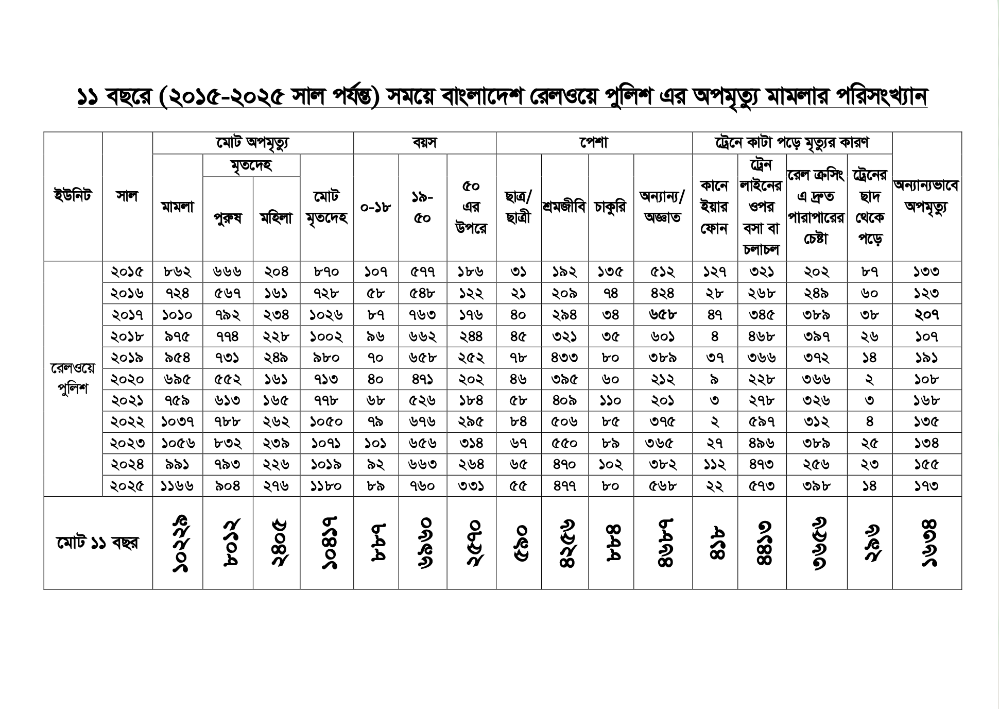

data
journalism
Companion page for Nazmul Ahasan's MRDI 2026 talk — the links, the formulas, and the actual webpages used in the deck.
Bookmark this page. Open links as the talk goes by.
নাজমুল আহসানের MRDI ২০২৬ আলোচনার সহায়ক পাতা — স্লাইডের লিঙ্ক, ফর্মুলা আর দরকারি ওয়েবপেজগুলো এক জায়গায়।
পাতাটা বুকমার্ক করে রাখুন। আলোচনার সময় প্রয়োজনমতো খুলে নিন।
Where we're going
এই পাতায় যা আছে
Statistics ≠ data journalism
পরিসংখ্যান মানেই ডেটা সাংবাদিকতা নয়

At Bangladesh's railway crossings, nearly a death a day
বাংলাদেশের রেল ক্রসিংয়ে প্রায় প্রতিদিনই একটি মৃত্যু
The same Railway Police data, cleaned and republished as an interactive piece on Netra News — clickable, filterable, year-by-year.
রেলওয়ে পুলিশের একই ডেটা গুছিয়ে Netra News-এ ইন্টার্যাক্টিভভাবে প্রকাশ করা হয়েছে। এতে ক্লিক করা যায়, ফিল্টার করা যায়, বছরভিত্তিক ডেটা দেখা যায়।
Read the story on Netra News Netra News-এ প্রতিবেদনটি পড়ুন netra.news →Body Count
An investigation into 2,600+ people killed by Bangladesh's security forces, 2009–2022 — searchable, filterable, every row sourced.
২০০৯ থেকে ২০২২ সালের মধ্যে বাংলাদেশের নিরাপত্তা বাহিনীর হাতে নিহত ২,৬০০-এর বেশি মানুষের তথ্য নিয়ে তৈরি এই ডেটাবেজ। এতে খুঁজে দেখা যায়, ফিল্টার করা যায়, প্রতিটি সারির উৎসও দেওয়া আছে।
Body Count — the interactive database Body Count — ইন্টার্যাক্টিভ ডেটাবেজ interactive.netra.news →What the source data actually looked like
মূল ফাইলটি দেখতে কেমন ছিল
Multiple mini-tables stacked in one sheet, inconsistent columns, totals mid-data — across 261 monthly tabs.
মূল ফাইলটি ছিল একেবারেই অগোছালো: ২৬১টি মাসিক ট্যাব, একই শিটে গাদাগাদি করে থাকা ছোট ছোট টেবিল, একেক ট্যাবে একেক রকম কলাম, আর মাঝেমধ্যে ডেটার ভেতরেই ঢুকে থাকা মোট হিসাব।

The cleanup, in numbers
261 raw monthly tabs → −93 duplicates & summaries dropped → 168 usable tabs → flatten, normalise, append, de-duplicate → 4,723 rows in the final long-format table.
Pivot tables — count by location
Pivot table — এলাকাভিত্তিক গণনা
Open the demo sheet, then walk these six steps:
নিচের ডেমো শিটটি খুলুন। এরপর ছয় ধাপে এগোন:
Demo Google Sheet — Body Count tab ডেমো শিট খুলুন — Body Count ট্যাব docs.google.com →- Select the range of the data.
- Go to Insert → Pivot table (place it in a new sheet).
- In the editor, drag
locationinto Rows andvictim_idinto Values. - Under Values, change Summarise by from
SUMtoCOUNTA. - In Rows, set Order to Descending and Sort by the
COUNTA of victim_idcolumn. - Now drag
yearinto Columns — the same totals broken out year by year.
- পুরো ডেটা রেঞ্জটি নির্বাচন করুন।
- Insert মেনু থেকে Pivot table বেছে নিন (নতুন শিটে রাখুন)।
- ডান পাশে যে এডিটর খুলবে, সেখানে
locationRows-এ দিন, আরvictim_idValues-এ দিন। - Values-এ ডিফল্ট
SUMথাকে — সেটি পাল্টেCOUNTAকরুন। - Rows-এ Order দিন Descending, আর Sort by বেছে নিন
COUNTA of victim_id— সবচেয়ে বেশি সংখ্যা উপরে চলে আসবে। - এবার
year-কে টেনে Columns-এ ফেলুন — একই হিসাব এবার বছর ধরে ভাঙা।
The result: 211 killings concentrated in a single upazila (Teknaf, Cox's Bazar) — invisible until you pivot. Add the year column and you can see exactly when each upazila spiked.
ফলাফল: শুধু টেকনাফ উপজেলাতেই ২১১টি হত্যাকাণ্ড — pivot না করলে বিষয়টি চোখেই পড়ত না। বছরের কলাম যোগ করলে দেখা যায় — কোন উপজেলায় কোন বছর সংখ্যাটা হঠাৎ লাফিয়ে বাড়ে।
From numbers to a map
সংখ্যা থেকে মানচিত্রে
The same pivot data — but plotted on a map of Bangladesh. Geography says what columns of numbers can't.
একই pivot ডেটা — এবার বাংলাদেশের মানচিত্রে। সংখ্যার কলাম যা বলতে পারে না, ভৌগোলিক ছবি সেটা চোখে আঙুল দিয়ে দেখায়।

VLOOKUP — what it does
VLOOKUP — কী কাজে লাগে
VLOOKUP looks up a key (e.g. a district name) in the first column of another range, and returns the value from a chosen column.
VLOOKUP মিল খুঁজে দেখে — যেমন জেলার নাম। অন্য টেবিলের প্রথম কলামে সেই নাম পেলে একই সারির নির্দিষ্ট কলাম থেকে তথ্য এনে দেয়।
=VLOOKUP(search_key, range, column_index, [is_sorted])
search_key — the value you want to look up
range — the table to search in (key column first)
column_index — which column of the range to return (1, 2, …)
is_sorted — almost always FALSE (exact match)
search_key — যে মানটি মিলিয়ে দেখতে হবে
range — যে টেবিলে খুঁজবে (মেলানোর কলামটি প্রথমে থাকতে হবে)
column_index — মিল পাওয়ার পর কোন কলাম থেকে তথ্য আনবে (১, ২, …)
is_sorted — প্রায় সব ক্ষেত্রেই FALSE রাখুন (হুবহু মিল)
We'll apply this to real demo data in the next section.
পরের অংশে ডেমো ডেটায় এটি হাতেকলমে ব্যবহার করব।
Female dropout × child marriage — the demo data
মেয়েদের স্কুল ছাড়ার হার × বাল্যবিবাহ — ডেমো ডেটা
The talk uses fake demo data, district-level — to demonstrate the principle, not to make a real-world claim. The sheet has three tabs:
এটি প্রশিক্ষণের জন্য বানানো জেলাভিত্তিক ডেটা। পদ্ধতি বোঝানোর জন্য, বাস্তব কোনো দাবি নয়। শিটে তিনটি ট্যাব আছে:
- Education — district + female dropout rate (this is where you'll work)
- Social — district + child marriage rate
- Population — district + population
- Education — জেলা + মেয়েদের স্কুল ছাড়ার হার (কাজ হবে এই ট্যাবেই)
- Social — জেলা + বাল্যবিবাহের হার
- Population — জেলা + জনসংখ্যা
Open the sheet, make a copy, then move to the next slide:
শিটটি খুলুন, নিজের জন্য একটি কপি করে নিন, তারপর পরের স্লাইডে যান:
Demo Google Sheet — Education tab ডেমো শিট — Education ট্যাব docs.google.com →Apply the VLOOKUPs
এবার VLOOKUP চালান
In the Education tab, paste each formula in the cell next to a district name, then drag down to fill the column.
Education ট্যাবে জেলার নামের পাশের সেলে নিচের ফর্মুলাগুলো পেস্ট করুন। তারপর একই ফর্মুলা নিচের সারিগুলোতে কপি করুন — পুরো কলাম ভরে যাবে।
Pull child marriage from the Social tab
বাল্যবিবাহের হার যোগ করুন
=VLOOKUP(A2, Social!$A:$B, 2, FALSE)Pull population from the Population tab
জনসংখ্যা যোগ করুন
=VLOOKUP(A2, Population!$A:$B, 2, FALSE)You should now have three columns side by side: dropout, child marriage, population.
এখন Education ট্যাবেই পাশাপাশি তিনটি কলাম থাকবে — dropout, child marriage, population। এখান থেকেই চার্ট বানাবেন।
Plot it — then reveal the chart
চার্ট বানান — তারপর নমুনাটি দেখুন
Take your joined table to Datawrapper. Plot dropout (x) vs. child marriage (y), with population sizing the bubbles.
যে টেবিলে dropout, child marriage আর population একসঙ্গে আছে, সেটি Datawrapper-এ দিন। X-অক্ষে dropout, Y-অক্ষে child marriage দিন। bubble-এর আকার হবে population অনুযায়ী।
Datawrapper — make the chart Datawrapper — চার্ট তৈরি করুন datawrapper.de →Try it yourself first. When you're done — reveal the chart I made:
আগে নিজে চেষ্টা করুন। হয়ে গেলে আমার বানানো নমুনা চার্টটি দেখুন:
7-Eleven & Circle K — store-overlap analysis
7-Eleven ও Circle K — কাছাকাছি দোকান খুঁজে দেখা
The two source store-locator pages that were scraped, and the Bloomberg story they powered.
এই দুই দোকান খোঁজার পেজ থেকে অবস্থান-সংক্রান্ত তথ্য সংগ্রহ করা হয়েছিল। সেই ডেটাই Bloomberg প্রতিবেদনটির ভিত্তি।
7-Eleven store locator 7-Eleven store locator 7-eleven.com/locator → Circle K — list of US stores Circle K — যুক্তরাষ্ট্রে দোকানের তালিকা circlek.com → Bloomberg — Couche-Tard's 7-Eleven Overlaps Face Skeptical US FTC Review Bloomberg — 7-Eleven অধিগ্রহণ নিয়ে FTC-র সংশয় bloomberg.com — gift link →IMPORTHTML — one formula, the whole table
IMPORTHTML — এক ফর্মুলাতেই টেবিল চলে আসে
Open a fresh Google Sheet. Paste this into A1:
নতুন একটি Google Sheet খুলুন। নিচের ফর্মুলাটি A1-এ পেস্ট করুন:
=IMPORTHTML("https://en.wikipedia.org/wiki/List_of_United_States_counties_and_county_equivalents", "table", 2)Change the last argument (2) to grab a different table from the page.
একই পেজ থেকে অন্য টেবিল আনতে চাইলে শেষের সংখ্যাটি (2) বদলে দিন।
Hong Kong — license registry → Bloomberg
হংকং — লাইসেন্স রেজিস্ট্রি → Bloomberg
Not every site is as simple as a clean HTML table. Some pages are larger, messier, and more rewarding: the data loads through search forms and background requests. The browser's Network tab can reveal those requests; a scraper can then collect each page and license type into a CSV for reporting.
সব ওয়েবসাইট এত সহজ নয় যে এক ফর্মুলাতেই টেবিল চলে আসবে। কিছু পেজ অনেক বড় ও জটিল — তবে সেখানেই ভালো গল্পের সম্ভাবনাও বেশি। সার্চ ফর্ম আর পেছনে চলা request-এর মাধ্যমে ডেটা আসে। ব্রাউজারের Network tab দেখলে সেই request খুঁজে বের করা যায়; তারপর স্ক্র্যাপার দিয়ে প্রতিটি পেজ ও লাইসেন্স টাইপ থেকে তথ্য নিয়ে CSV বানানো যায়।
SFC Public Register apps.sfc.hk → Bloomberg — Hong Kong Finance Jobs Rebound to Record After Talent Drain Bloomberg — হংকংয়ের ফিন্যান্স খাতে চাকরি ফের রেকর্ডে bloomberg.com — gift link · Nov 11, 2024 →Get in touch
যোগাযোগ
- Affiliation: Netra News
- Website: nazmulahasan.com
- Email: nazmul@netra.news
- X: @the_nazmul
- সংস্থা: Netra News
- ওয়েবসাইট: nazmulahasan.com
- ইমেইল: nazmul@netra.news
- X: @the_nazmul
MRDI 2026 | data journalism | thank you for following along.
MRDI ২০২৬ | ডেটা সাংবাদিকতা | সঙ্গে থাকার জন্য ধন্যবাদ